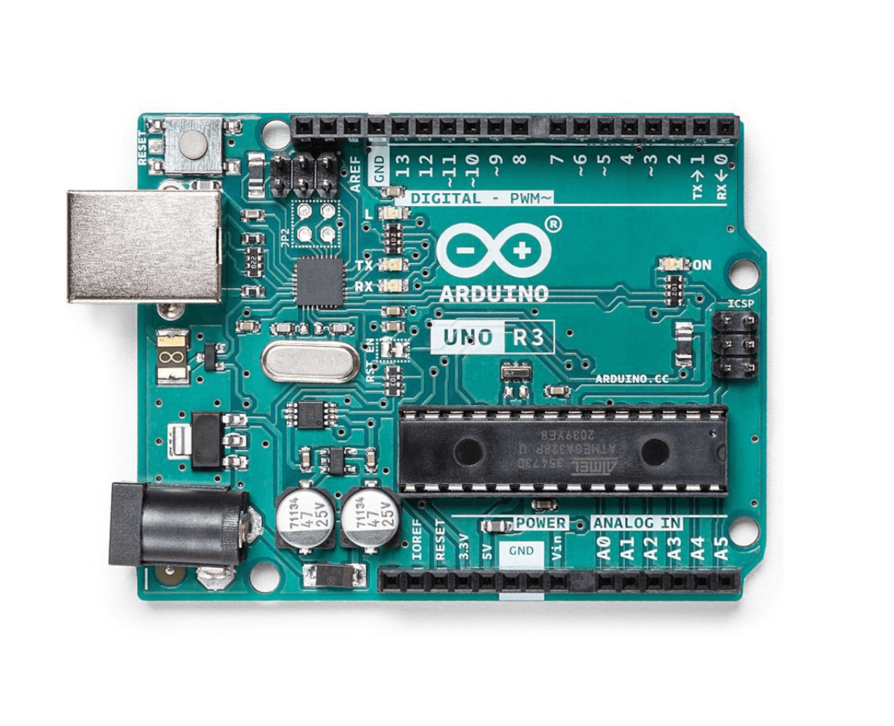
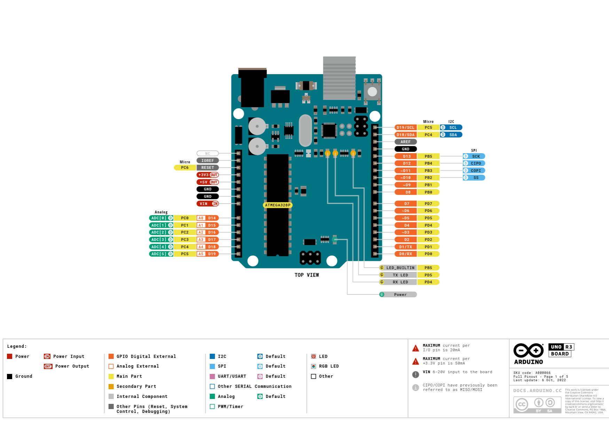
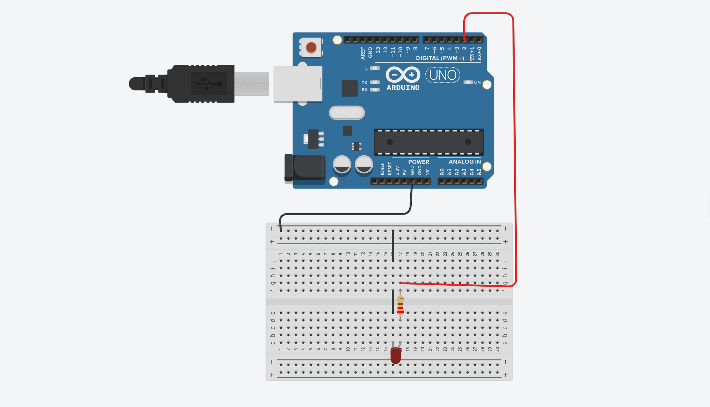

The most popular Arduino board is the Arduino UNO R3. This guide will help you understand the basics of the board while also preparing you for your firs project. For the project you should have an Arduino UNO R3, some jumper cables, a breadboard, a 220 Ohm resistor and a simple LED.
Knowing your Board
The next two slides will introduce you to the Arduino R3.
The first thing that stands out in the first slide is the black rectangle on the bottom-right side of the board. That is the ATmega328P microcontroller. The 8-bit microcontroller is the "brain" of the board. That means it runs your code and transforms inputs into outputs as needed. The inputs can be determined by you, but in most cases the inputs represent signals that come from sensors.
Now, you may wonder : how can I manage inputs and outputs? The answer is by using the digital and analog pins, which are located on the top and bottom margin as shown in the picture. The ones on top are called digital pins and they have two states : HIGH and LOW. The bottom pins are analog and they can have values between 0-1023.
If you want, you can study the second slide for a better understanding of the components, as they have many more functions.
Microcontroller: ATmega328P
USB connector: USB-B
Digital I/O Pins: 14
Analog input pins: 6
I2C: YES
I/O Voltage: 5V
DC Current per I/O Pin: 20mA
Clock speed: 16 MHz


Your first project
Now that you know the basics of the Arduino board, it is time to make your first project. We will make a simple circuit that turns on a LED. Follow the steps below:
Now we will make a simple circuit that turns on a LED. Follow the schematic in the next image.
⚠️ Be careful: connect the anode (longer leg) of the LED to digital pin 2 and the cathode (shorter leg) to GND (-).
Then copy the following code into your new project.
The code defines pin 2 as “Led_Pin”. In void setup() we set it as OUTPUT, which means it delivers 5V to the LED. Because we used a 220Ω resistor, the LED won’t burn out.
Connect the Arduino to your computer and upload the code. The LED should light up!

Conclusion
Now that you made your first project, feel free to use other components and sensors to help make your ideas a reality. Here is a demonstration video of a simple radar project: